根据你学习C++所处的阶段，本网站可能是你在某个阶段学习C++的唯一资料。LearnCpp.com 以一种新手友好的方式向你介绍了C++的基本概念，但是它不可能涵盖C++的方方面面。当你开始探索本教程以外的话题时，你需要学会如何利用其他的资源来进行学习。
Stack Overflow 是一个问答网站，在这里你可以问问题(你可以在这里找到与你有相同问题的人并且阅读这些问题的答案)。不过，多数情况下我们还是建议你先去看看C++语言的参考手册。和教程不同，教程通常专注于某些重要话题并使用通俗的语言向你解释相关的概念，使得语言学习更容易。但是参考手册不同，它的作用是使用正式的术语，精确地描述C++中的概念。因此，参考手册通常很全面、精确，但比较难以理解。
本节课我们会向你介绍如何高效地使用 cppreference，这是一个流行的C++标准参考文档网站，本教程自始至终多次参考了该网站的内容。我们会使用三个具体的例子向你展示如何去使用该参考网站。
总览#
Cppreference 的首页是一个总览页面 其中列出了语言的核心功能和标准库：
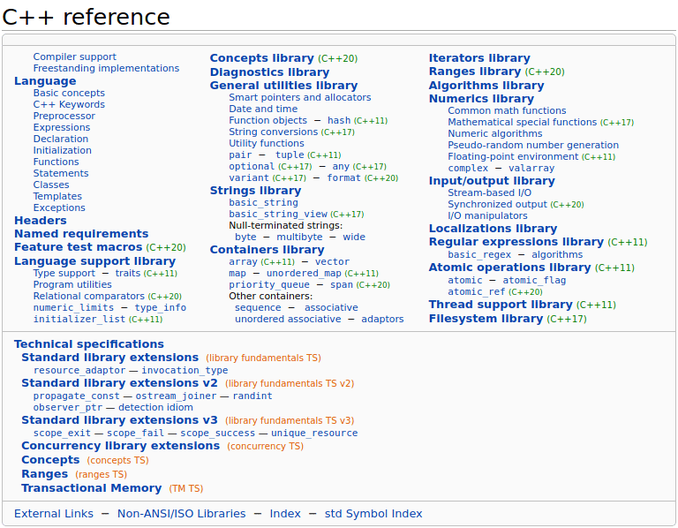
虽然在这个页面中，你可以看到cppreference提供的所有内容的目录，但通常使用搜索功能或搜索引擎更容易找到你需要的内容。当你完成了LearnCpp.com上的教程之后，该页面是你绝佳的下一站目的地。在这里你可以深入研究标准库，并查看C++还提供了哪些你还不知道的功能。
表的上半部分显示了C++当前的特性，而下半部分则展示了技术规范，这些特性可能会在未来的版本中添加到C++，也可能不会添加到C++，或者已经部分被语言接受。如果您想了解即将推出的新功能，这将非常有用。
从C++ 11开始，cppreference会用引入该功能的标准版本来标记对应的功能。标准版本是上面图片中一些链接旁边的绿色小数字。那些没有标记标准版本的功能，则是在 C++ 98/03 中就已经有的功能。我们不仅会在总览页面看到标准版本号，它在cppreference上随处可见，这使得我们可以确切地知道在特定的C++版本中什么功能可用，什么功能不可用。
案例一：std::string::length#
接下来，让我们首先研究一个已经学习过的函数——std::string::length ，它返回字符串的长度。
在cppreference的右上角，搜索“string”。此时做会显示一长串类型和函数，目前只有最上面的是相关的。
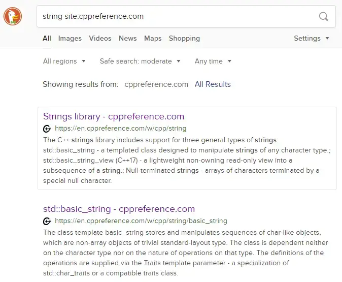
当我们也可以直接搜索“string length”，不过为了向你更全面地展示各种情况，这里我们故意舍近求远了。点击 “Strings library” 会将我们带到一个页面，该页面展示了C++支持的各种字符串功能。
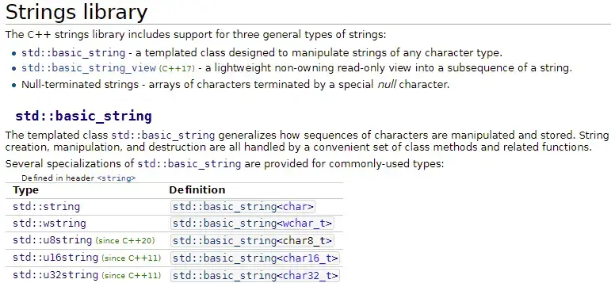
在 “std::basic_string” 小节下方，我们可以看到一系列的 typedefs，其中就有 std::string。
点击 “std::string” 会跳转到 std::basic_string 页面。网站中并没有关于 std::string 的页面因为 std::string 是 typedef 的 std::basic_string<char>。在 typedef 列表中可以看到。
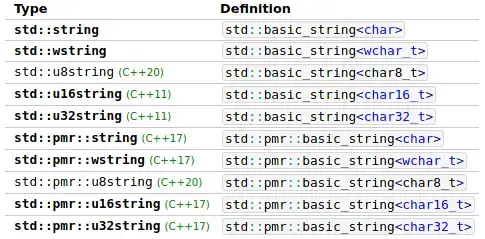
<char> 表示该字符串中的每个字符其类型都是 char。在这里可以看到，C++的字符串，其字符支持不同种类的字符。当需要使用Unicode而非ASCII时，这显得尤为重要。
还是这个页面，继续往下看，此时可以看到成员函数列表 Member functions (该类型支持的方法)。如果你想知道某个类型可以做什么样的操作，直接看这个表就非常清楚了。在这个表中，可以找到 length 方法(和 size)。
点击该方法的链接，页面跳转到 length 和 size的介绍 （这两其实是一回事）。
每个页面的顶部首先呈现的是功能和语法、重载或声明的简短摘要。
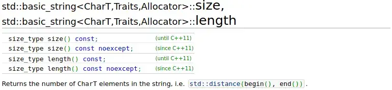
这个页面的标题显示了类和函数的名称以及所有模板参数。我们可以忽略这部分。在标题下面，可以找到所有的重载函数(具有相同名称的函数的不同版本)以及它们应用的语言标准。
再下面，是函数的形参列表，以及返回值类型。
因为 std::string::length 是一个非常简单的函数，所以该页面中并没有很多内容。一般来说，页面会包含使用了相关特性的例子，例如：
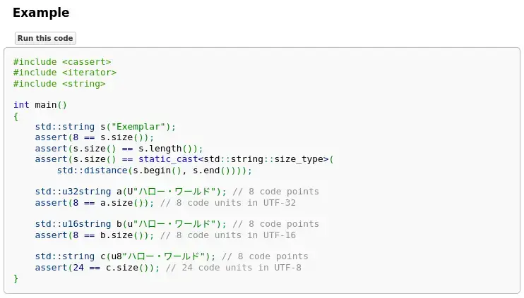
除非你已经完全掌握C++，否则示例中总会有你还没见过的特性。如果有足够多的例子，你可能能够理解足够多的内容，从而了解如何使用函数及其功能。如果示例太复杂，也可以在其他地方搜索示例，或者阅读不理解部分的参考资料(可以单击示例中的函数和类型来查看它们的功能)。
现在我们知道了 std::string::length 的作用，不过这没什么新鲜的，毕竟我们之前就已经掌握该函数了。接下来看看新的东西吧！
案例二：std::cin.ignore#
在9.5 - std::in 和输入错误处理中我们介绍过 std::cin.ignore，它可以忽略换行之前的全部内容。这个函数的其中一个形参又长又啰嗦，很难被记住。是什么来着？怎么用来着？让我们查查看。
在搜索来输入 “std::cin.ignore” ：
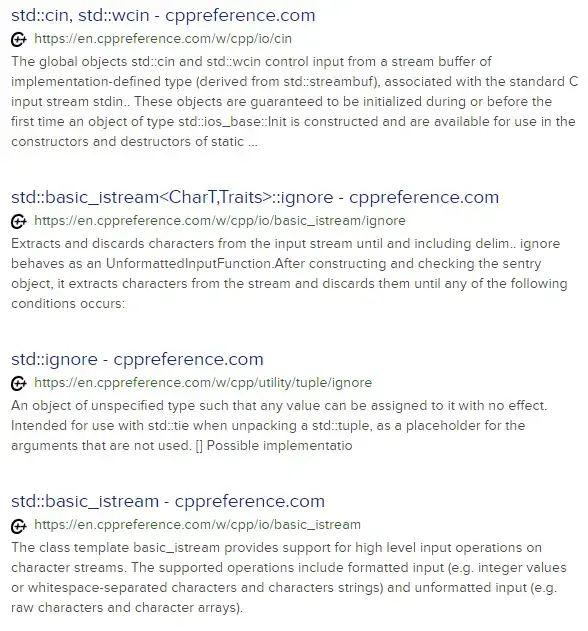
std::cin, std::wcin- 我们要找的是.ignore，而不是std::cin；std::basic_istream<CharT,Traits>::ignore- 这是啥？看不懂先跳过吧；std::ignore- 不是这个；std::basic_istream- 也不是这个。
没搜到？现在咋整？让我们先进入 std::cin ，然后顺藤摸瓜吧。这个页面上也没有明显与我们需要找的东西相关的内容。在页面的顶部，可以看到 std::cin 和std::wcin的声明，同时它还告诉我们使用 std::cin时应该包含哪个头文件：
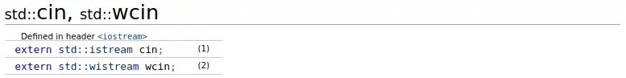
可以看出 std::cin 是 std::istream 类型的一个对象。接下来点击 std::istream 的链接：
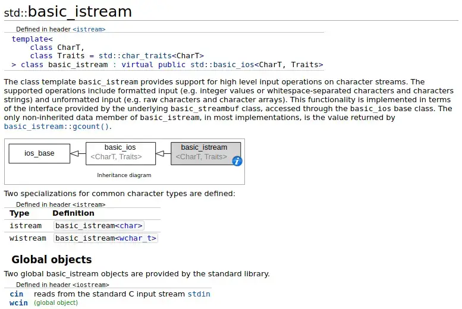
等等！ 我之前搜索 “std::cin.ignore” 的时候是搜到过 std::basic_istream 的。原来 istream 就是 basic_istream 的 typedef 啊。也许我们并没有搜索错！
页面向下滑动，可以看到很多熟悉的函数：
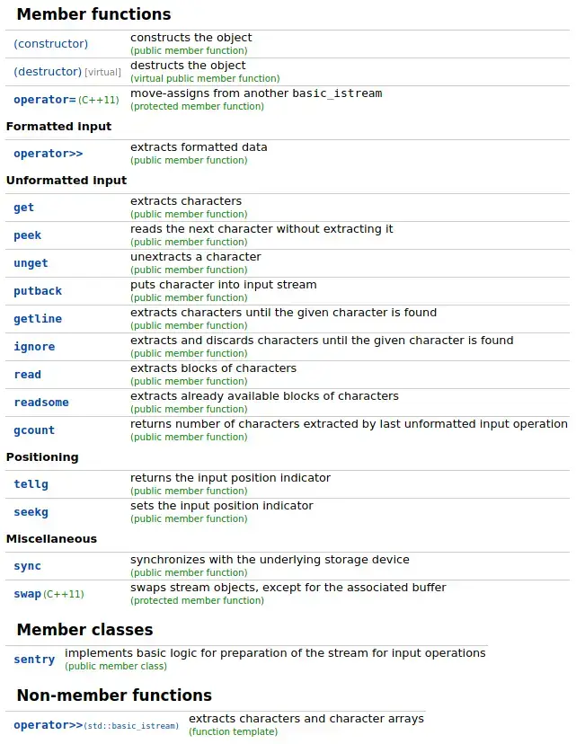
这里很多函数我们都用过：operator>>, get, getline, ignore。可以浏览一下还有哪些函数，然后点击 ignore，这就是我们要找的函数。
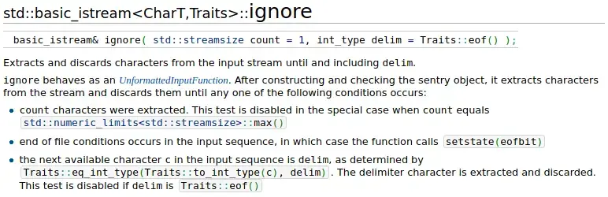
在页面的顶部有函数签名、函数简介及其两个参数的功能描述。形参后面的= 符号表示默认实参(在课程11.5 - 默认参数中讨论过)。如果没有为具有默认值的形参提供实参，则使用默认值。
接下来的无序列表中包含三条内容。可以看到 std::numeric_limits<std::streamsize>::max() 在 std::cin.ignore 中是由特殊含义的，它可以忽略字符计数检查。也就是说，std::cin.ignore 会忽略分隔符前所有的字符，或者直到耗尽需要关注的字符个数。
多数情况下，我们知道这个函数是干嘛的，但是忘记了参数和返回值，此时你不需要阅读函数的完整描述。这种情况下你只需浏览一下参数列表和返回值就足够了。
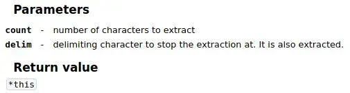
这里的参数介绍很简洁。它并没有包括 std::numeric_limits<std::streamsize>::max() 的特殊含义，但是这些简洁的参数介绍一般情况下能够帮助我们回忆起一些关键的信息。
案例三：语法#
除了标准库，cppreference还记录了C++语言的语法。下面是一个有效的程序:
#include <iostream>
int getUserInput()
{
int i{};
std::cin >> i;
return i;
}
int main()
{
std::cout << "How many bananas did you eat today? \n";
if (int iBananasEaten{ getUserInput() }; iBananasEaten <= 2)
{
std::cout << "Yummy\n";
}
else
{
std::cout << iBananasEaten << " is a lot!\n";
}
return 0;
}为什么在if-statement 的条件中有一个变量定义？在搜索引擎中搜索“cppreference if statement”来了解它的功能。搜索引擎会将我们带到if statements。在页面开始的地方就有其相关的语法说明。
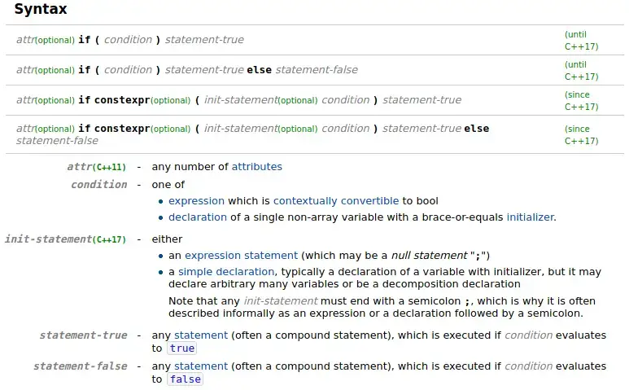
在页面的右半部分我们可以看到不同语法与C++版本之间的关系。对于 if-statement，从C++17开始，如果你忽略所有可选的部分，那么就是我们常用的 if-statement 的形式。在 condition 之前，有一个可选的部分称为init-statement，看起来这部分就是和之前例子中的代码是相关的。
if ( init-statement condition ) statement-true
if ( init-statement condition ) statement-true else statement-false在语法参考下方，有对语法的每个部分的解释，其中就包括 init-statement——它通常是一个带有初始化值的变量声明。
下面是 if-statements 的语法解释和一些简单的例子:
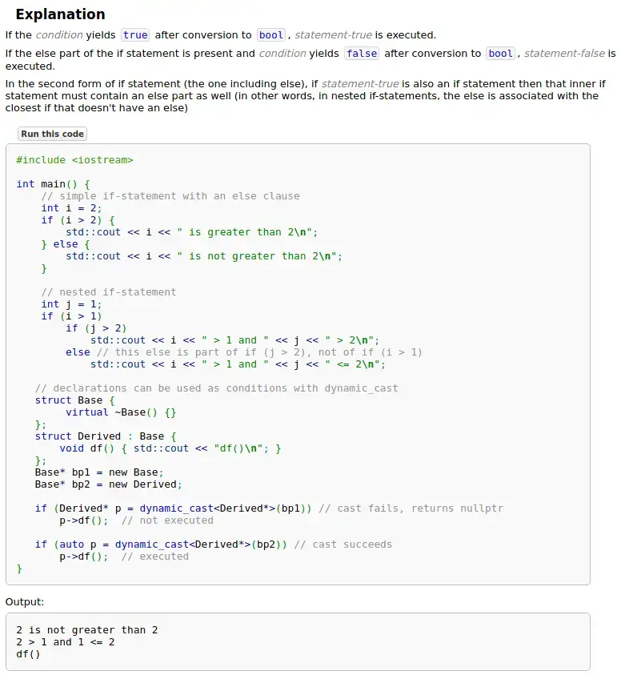
我们了解 if-statements 是如何工作的，但是这个例子中没有包含 init-statement 的用法。所以接着向下看，找找看有没有专门介绍带初始化值的 if-statements 的内容。
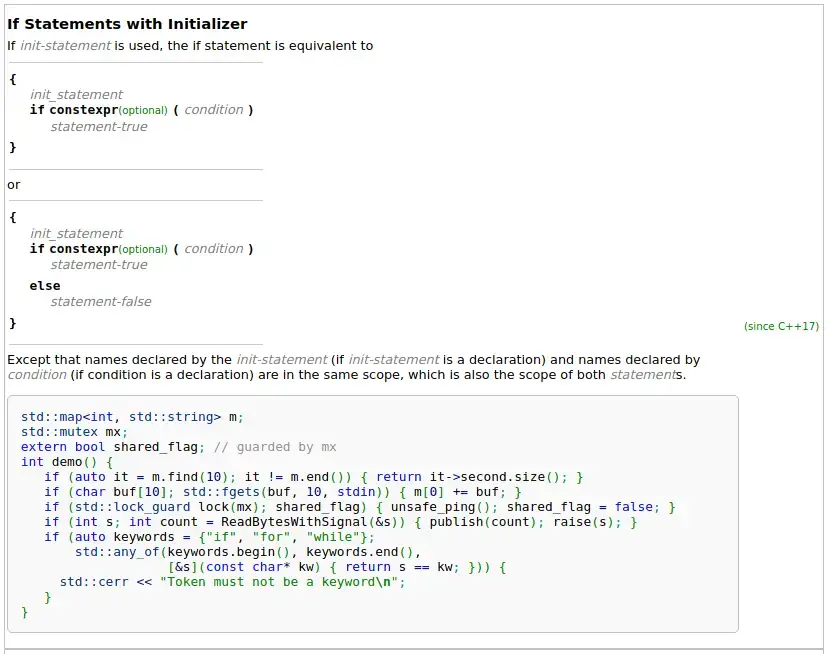
这里首先展示了如何使用 init-statement ，现在我们就知道之前代码中的if语句是怎么回事了。其实它就是将一般的变量声明和if语句合并起来罢了。
接下来的句子很有意思，它告诉我们 init-statement 声明的变量，在if语句的true和false语句块中都能使用。如果你之前天真的认为这个变量只能在true语句块中使用的话，该说明应该会让你看到有点意外。
init-statement 的例子中使用了一些我们还没有介绍过的特性，但我们并不需要看懂所有内容就可以了解如何使用 init-statement。所以目前可以先跳过让人困惑的内容，专注于我们熟系的部分：
// Iterators, we don't know them. Skip.
if (auto it = m.find(10); it != m.end()) { return it->second.size(); }
// [10], what's that? Skip.
if (char buf[10]; std::fgets(buf, 10, stdin)) { m[0] += buf; }
// std::lock_guard, we don't know that, but it's some type. We know what types are!
if (std::lock_guard lock(mx); shared_flag) { unsafe_ping(); shared_flag = false; }
// This is easy, that's an int!
if (int s; int count = ReadBytesWithSignal(&s)) { publish(count); raise(s); }
// Whew, no thanks!
if (auto keywords = {"if", "for", "while"};
std::any_of(keywords.begin(), keywords.end(),
[&s](const char* kw) { return s == kw; })) {
std::cerr << "Token must not be a keyword\n";
}最简单的例子似乎是使用了 int 的那个，但是它的分号后面又是一个定义，看上去有点奇怪。再看一个std::lock_guard 的例子：
if (std::lock_guard lock(mx); shared_flag)
{
unsafe_ping();
shared_flag = false;
}这里定义了变量(lock)，然后是分号，然后是条件。这个反倒是最接近我们代码的例子。
关于 cppreference 准确性的注意事项#
其实，cppreference 并不是一个官方文档源——相反，它是一个wiki百科应用。使用wiki，任何人都可以添加和修改内容——内容来自社区。虽然这意味着人们很容易添加错误的信息，但错误的信息通常会很快被发现并删除，使cppreference成为一个可靠的来源。